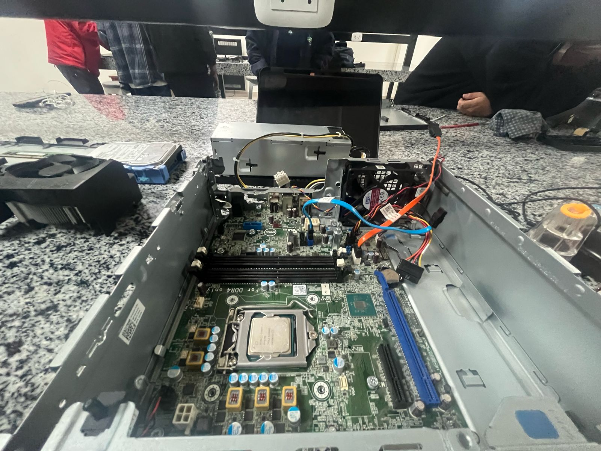
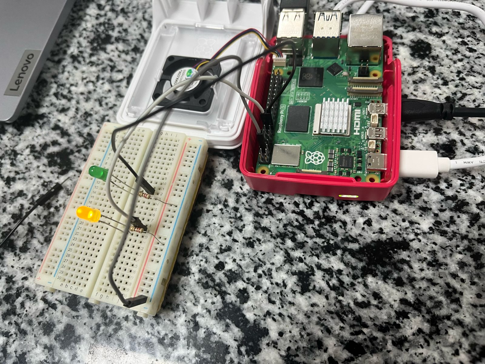
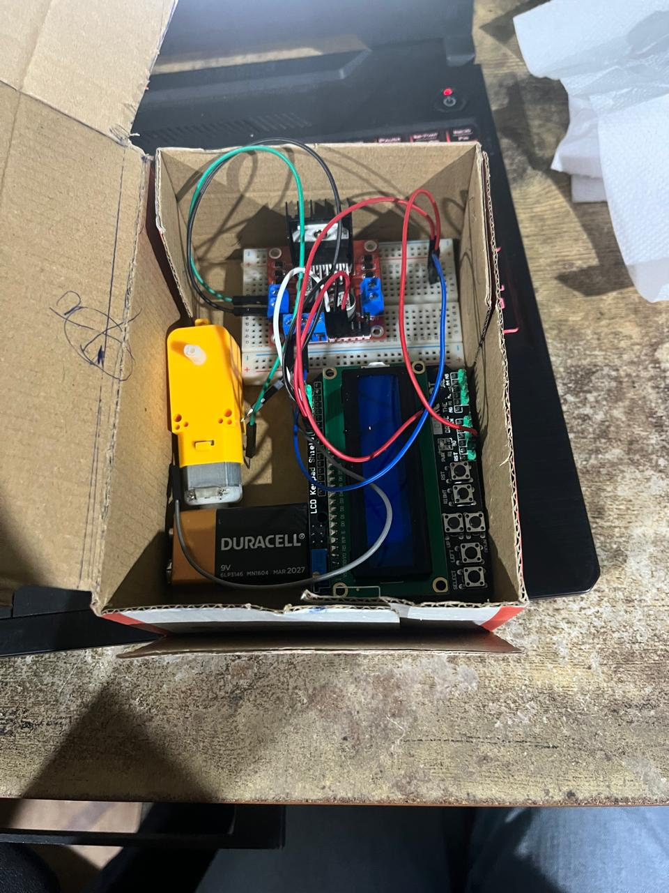
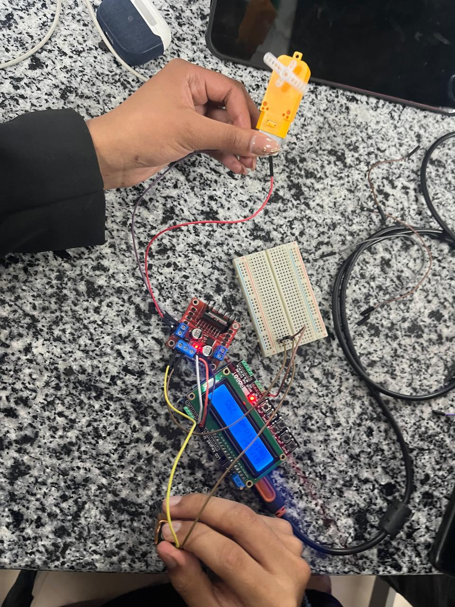

PROTOTIPO AUTOMATIZADO PARA LA CUCHARA DE CASAGRANDE
Dispositivo con Arduino Uno para automatizar golpes de compactación de suelo, optimizando procesos de laboratorio en ingeniería civil.




Estudiante Universitario de la UCSM | Ingeniero de Sistemas
Soy estudiante de Ingeniería de Sistemas con interés en desarrollo de software, optimización de algoritmos y diseño de soluciones tecnológicas. Me apasiona aprender nuevas herramientas y aplicarlas en proyectos reales.
Prácticas en Redes y Seguridad – Configuración de dispositivos de red, direccionamiento IPv4/IPv6 y simulaciones en Packet Tracer.
Prototipos con Arduino – Desarrollo de prototipos automatizados con Arduino Uno para proyectos de ingeniería civil.
Dispositivo con Arduino Uno para automatizar golpes de compactación de suelo, optimizando procesos de laboratorio en ingeniería civil.
Email: cesar.yana@estudiante.ucsm.edu.pe
GitHub: github.com/cesar9917